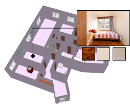
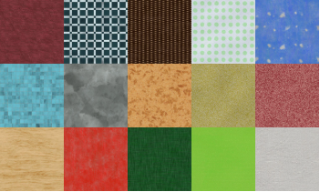
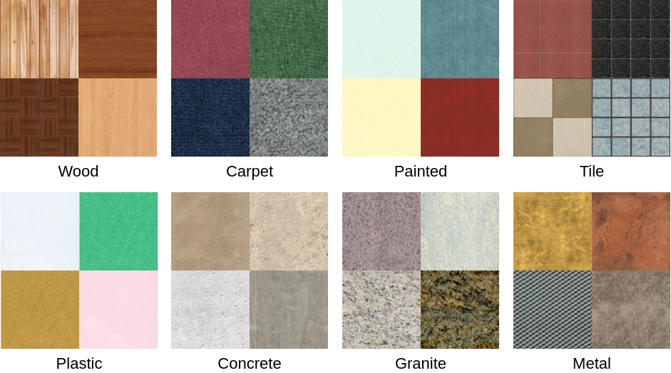

We address the task of converting a floorplan and a set of associated photos of a residence into a textured 3D mesh model, a task which we call Plan2Scene. Our system 1) lifts a floorplan image to a 3D mesh model; 2) synthesizes surface textures based on the input photos; and 3) infers textures for unobserved surfaces using a graph neural network architecture. To train and evaluate our system we create indoor surface texture datasets, and augment a dataset of floorplans and photos from prior work with rectified surface crops and additional annotations. Our approach handles the challenge of producing tileable textures for dominant surfaces such as floors, walls, and ceilings from a sparse set of unaligned photos that only partially cover the residence. Qualitative and quantitative evaluations show that our system produces realistic 3D interior models, outperforming baseline approaches on a suite of texture quality metrics and as measured by a holistic user study.
| Observed Surfaces | Unobserved Surfaces | All Surfaces | ||||||||||||||||
|---|---|---|---|---|---|---|---|---|---|---|---|---|---|---|---|---|---|---|
| Color | Freq | Subs CVPR Version |
Subs Version 2* |
FID | Tile | Color | Freq | Subs CVPR Version |
Subs Version 2* |
FID | Tile | Color | Freq | Subs CVPR Version |
Subs Version 2* |
FID | Tile | |
| Crop | 0 | 0 | 0 | 0 | 0 | 38.1 | 0.768 | 0.026 | 0.345 | 0.510 | 57.2 | 40.6 | 0.459 | 0.016 | 0.208 | 0.277 | 35.6 | 39.5 |
| Retrieve | 0.561 | 0.054 | 0.473 | 0.684 | 238.2 | 17.3 | 0.751 | 0.040 | 0.437 | 0.621 | 261.5 | 19.1 | 0.680 | 0.046 | 0.458 | 0.650 | 243.2 | 18.3 |
| Retrieve Version 2** |
0.498 | 0.038 | 0.471 | 0.684 | 221.4 | 17.3 | 0.751 | 0.034 | 0.515 | 0.602 | 257.3 | 13.3 | 0.657 | 0.037 | 0.471 | 0.630 | 232.3 | 14.1 |
| NaiveSynth | 0.694 | 0.046 | 0.385 | 0.752 | 239.3 | 21.7 | 0.714 | 0.044 | 0.427 | 0.738 | 245.4 | 19.8 | 0.709 | 0.046 | 0.404 | 0.804 | 239.4 | 20.6 |
| Synth (ours) CVPR Version |
0.431 | 0.035 | 0.350 | 0.463 | 196.1 | 16.4 | 0.653 | 0.032 | 0.393 | 0.490 | 199.4 | 18.6 | 0.591 | 0.034 | 0.392 | 0.485 | 196.2 | 17.6 |
| Synth (ours) Version 2** |
0.386 | 0.027 | 0.382 | 0.480 | 158.8 | 11.0 | 0.714 | 0.028 | 0.413 | 0.461 | 178.9 | 12.8 | 0.579 | 0.028 | 0.380 | 0.480 | 166.9 | 12.4 |
Our source code is available on GitHub. Pretrained models are available here.
Rent3D++ Dataset[Download Dataset] We train and evaluate Plan2Scene on the Rent3D++ dataset. |
Stationary Textures Dataset[Version 1] [Version 2] We train our texture synthesis approach on this dataet. The first version of the dataset is used in our CVPR paper. The second version of the dataset provide improved results on Rent3D houses. |
Substance Mapped Textures DatasetWe used this dataset for the retrieve baseline. |
If you find our work useful, please cite our paper below.
Plain Text
Madhawa Vidanapathirana, Qirui Wu, Yasutaka Furukawa, Angel X. Chang, and Manolis Savva. Plan2scene: Converting Floorplans to 3D Scenes. In IEEE/CVF Conference on Computer Vision and Pattern Recognition (CVPR), June 2021.
BIBTEX
@inproceedings{Vidanapathirana2021Plan2Scene,
author = {Vidanapathirana, Madhawa and Wu, Qirui and Furukawa, Yasutaka and Chang, Angel X. and Savva, Manolis},
title = {Plan2Scene: Converting Floorplans to 3D Scenes},
booktitle={IEEE/CVF Conference on Computer Vision and Pattern Recognition (CVPR)},
month = {June},
year = {2021},
pages = {10733-10742}
}